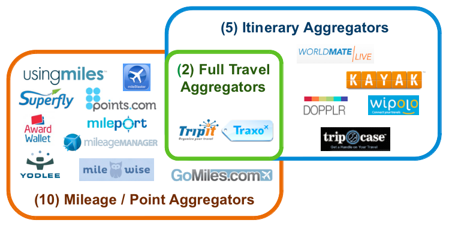
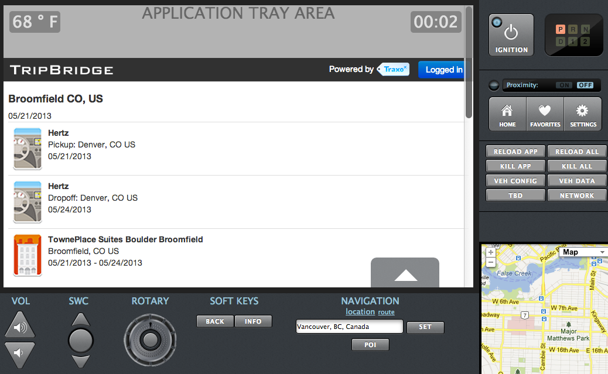

Practical API Strategy
Tools and Techniques

Chris Stevens
Engineering and Operations @Traxo
Engineer / Developer / Consultant
Pilot / Texas A&M Class of 1998
Travel Industry
Large, Entrenched, Traditional Suppliers
Disruptive Newcomers
NO APIs
Big Problems
Fewer Travel Agents
More Travel Websites
Massive fragmentation
DIY Travelers (38%)
Manually organizing travel details
Multiple travel sites
Stale information with limited portability
Itinerary Management
Adding value for the Traveler
Comprehensive travel aggregator
Deep travel industry experience
5-yr Dallas "Startup"
"The Mint.com for travel"Source: TechLi.com
190 Travel Sources
Few Supplier-Side APIs

Consumer Channels
- Website (2008)
- Mobile Website (2010)
- Calendar Feeds (2010)
- Embeddable Widgets (2010)
- iOS/Android Mobile Apps (2013)
Traxo API
An evolution
2011 - Proof of Concept
A true "MVP"
A single CakePHP controller
Attached to existing web application
Documentation on Google Sites
Manual api_key distribution
Not fun to work on
Good enough
2012 - "Sales Tool"
Light Development. Maintenance
Added Versioning (Twice)
Structured Travel Intent Data
Commercial Interest Growing
Partnership Discussions
Finally...Traction
Today - Product
Dedicated codebase
Shared Middleware Libraries
Self-service developer portal
OAuth2. 3Scale
Tuned for API serving
New Opportunities
Commercialization. Monetization. Growth
Mobile apps. Mashups
Partnerships
"With the Traxo solution integrated with SAP Cloud for Travel, we expect our customers will have access to integrated travel itinerary and booking data in new ways – via a single channel," said Joe Fuster, senior vice president, Cloud, Customer and Money Line-of-Business Solutions, SAP.Source: PRNewswire - June 20, 2013
Third-Party Integrations
General Motors In-Vehicle APIs
API Strategy
A lot like flying...
Start With a Takeoff
V1: Accelerating. Still time to stop
V1+: People are depending on you
All About The Journey Landing
Nobody Remembers the Takeoff

Planning is Important
But just get started

Many Routes
Pick one that supports your business

Support
High-Touch. Especially Enterprise Customers
API Devs Recommended
{kind=link}
Measure Everything
In-House. Outsource. Use What Works
Just Do It. From The Beginning
Lessons Learned
From 5 years of bootstrapping
In the travel industry
Infrastructure
- In-house
- Pick the right server solution (Nginx)
- Caching tier (Memcached, Couchbase, Varnish)
- Really great PaaS options:
- Parse, OpenShift, Heroku, Appcelerator Cloud
- Dedicated host/infrastructure
- api.domain.com
- From the beginning
- Isolate and optimize
Frameworks
Use what works for you
- What are you using already?
- Node.js
- API micro-frameworks (Slim for PHP)
Code
- Organization
- Single controller fine for proof of concept
- Dedicated codebase recommended
- Shared Components
- Middleware: Model definitions, etc
- Restrict and package fields from the ORM
- Date/Times
- Use ISO8601. Always. Everywhere.
- Testing
- Unit. Integration.
- Write a simple mobile app against your API (Titanium)
- We did: TripBridge for iOS / TripBridge for Android
Versioning
Twice. So Far.
- Initially, used a vendor media type via header
- Now, via url (api.domain.com/v1/{endpoint})
- Harder for devs to overlook
- Works great with CakePHP prefix routing
- Version Policy
- Free to add response fields while retaining backwards compatibility
- "Experimental" fields - marked with leading underscore
- "Flex" Version concept: FlightStats API
- End-of-life notice
- Minimum of 6 months
OAuth 2
Protect your user's credentials
Measure Everything
Measure Anything
"If it moves, we track it. Sometimes we’ll draw a graph of something that isn’t moving yet, just in case it decides to make a run for it."- Engineering at Etsy Measure Anything. Measure Everything
Open Source Tooling
Measure Anything. For "Free"
Examples: Dashing
Large-Format Information Radiators
Examples: Descartes
Large-Format. Desktop / Collaboration
Examples: Tasseo
Large-Format. Desktop / Collaboration
Examples: Graphiti
Desktop Viewing. Collaboration
Metrics as a Service
Measure Anything. Not Quite "Free"
- Providers
- New Relic
- HostedGraphite
- Gaug.es
- Segment.io
- Great way to get started
- Minimal upfront investment
- Excellent interfaces (typically)
3Scale
Flexible API Management
Features
- Out-of-band Solution
- Generous Free Tier
- Developer Portal
- Authorization and Rate-Limiting
- Strong Open-Source Support
- Integration SDKs
- API Plans / Tiers
- Billing System
- Metrics
- For the developer
- For the provider
Developer Relations
- Developer Portal / On-boarding
- Swagger Active Docs
- Example: API Console for Developers
- Kin Lane's Analysis of Swagger
- Client code (SDK) for your API
- Client Management
- Enable/Disable per application (clientId)
- Set quotas and alerts
- Metrics
- Simple hit tracking
- Per-endpoint or as desired
SDK Integration
- SDKs for most languages
- Open-source
- https://support.3scale.net/libraries
- Authorize
- Report Metrics
Proxy Support
Nginx
- Best-in-class web server + 3Scale module
- Authorization, tracking, and rate-limiting
- Reduces calls to 3Scale API
- Reduces calls to your backend
- OAuth Support now in Beta!
Wrap Up
"Developers are the new Kingmakers"- Gluecon 2013 - Steven O'Grady - Redmonk
"Everything is an auto-scaling group"- Gluecon 2013 - Everybody @Netflix
"When clouds fight, we all win"- Gluecon 2013 - Adrian Cockcroft @adrianco / @Netflix